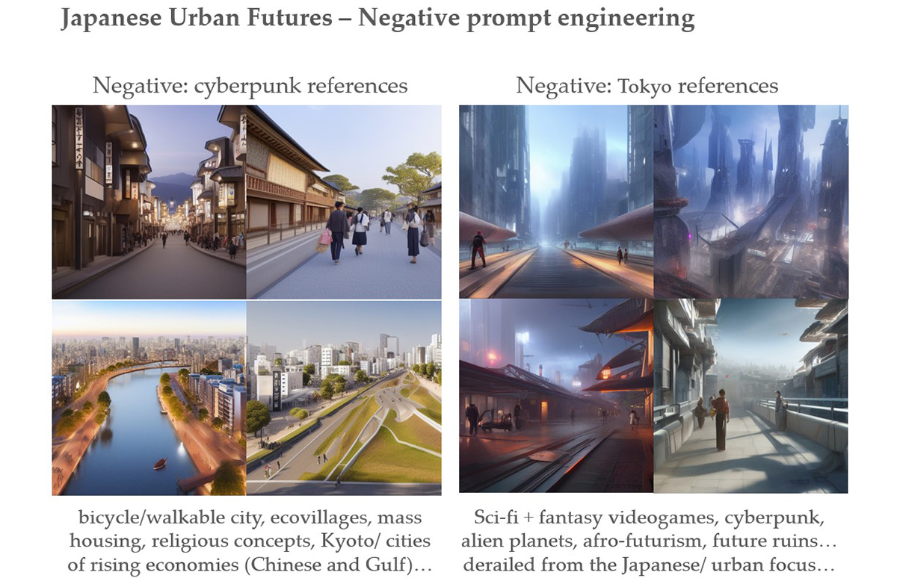
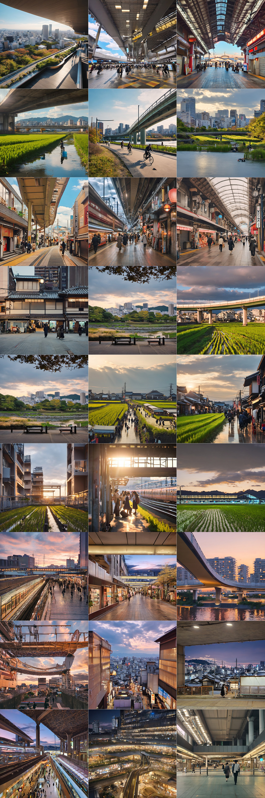

SYNTHETIC KANSAI 合成関西

This pop-up exhibition at Naramachi Center (奈良市ならまちセンター) demonstrated the artistic research progress of my residency hosted by the Space Department Nara between November and December 2024. It applies AI image generation tools to deconstruct popular imaginaries of Japanese urban futures into clusters of artistic and design references, followed by synthetic representation of possible counter-narratives from the curated datasets of my urban photography across the Great Kansai Area. The exhibition featured digital images of my AI training progress, which reassembles the architectural and spatial characteristics of Kansai urban landscapes from my photo sets to reinterpret Japanese urban futures. The research derives from my doctoral thesis at Aalto University and will be continually developed as a case study on contemporary architectural imagination.
PHASE 1 - CONCEPT INTERROGATION
The research addresses two intertwined challenges of contemporary architectural imagination: the cultural stagnation of media-recycled concepts across creative industries, where we can hardly conceive truly alternative futures beyond the consumer-driven remix of popular media narratives; and its potential further augmentation by the data-driven creativity of generative AI applications, which largely fed on the same narratives from common crawl datasets of online media. Their cultural interplays frame large AI image generators (e.g. Stable Diffusion, Midjourney, DALL-E) as synthetic representation devices of media-recycled visual concepts, which indicates a new perspective to investigate and challenge the stagnant paradigms of contemporary architectural imagination. My previous experiment of AI-driven research on 'the generic future city' has prepared working methods of concept extraction and interrogation. It also identifies Japanese urban imaginaries as an underlying component of future-city concepts represented by Stable Diffusion, therefore leading my journey to Japan for this artistic research residency at the Space Department Nara.
The AI synthetic representation of media-recycled futuresMy research takes Stable Diffusion v1.5 as the base model, which is pre-trained on one of the world's largest open image datasets 'LAION-5B' to cover comprehensive visual knowledge of popular media. It started with a generic prompt to produce a large image batch of Japanese urban future concepts, in this case, I took 1000 as the minimum workable size indicated by my previous experiment. Then, I conducted reverse prompt engineering on the CLIP Interrogator to generate detailed descriptions of each image. The resulting keywords and phrases were ranked for frequency and categorized into thematic groups, providing conceptual guidance for the prompt fine-tuning of subsequent iterations. This progressive process of concept extraction and interrogation uncovers synthetic influences of popular media narratives on Japanese urban futures, not only by providing a ranked list of references but also by visualizing alternative scenarios of their cultural weights through prompt fine-tuning design.
Concept extraction method (simplified) diagramConcept Extraction 1st Iteration
Identified media references
2nd Iteration - Prompt Fine-tuning
 Subsequent Iterations - (Negative) Prompt Fine-tuning
Through numerous iterations of concept extraction, prompt fine-tuning, and negative prompt engineering, the research labeled AI interpretation of Japanese urban futures as:
-Being primarily viewed from the lens of ACG (anime, comics, game) concept arts;
-Dominated by cyberpunk scenes of retro-techno-determined futures;
-Inescapable from Tokyo references (neighborhoods and urban forms);
-Carrying design implications for mass housing and walkable cities;
These characteristics provide overall guidance for us to understand the media-recycled concepts of Japanese urban futures within the data coverages and technical
capacity of AI models in use. Limitations also come from prompt curation and batch sizes of AI image generation, which require new triangulation measures in future studies.
PHASE2 IN PROGRESS - COUNTER-NARRATIVE
The second phase of this project challenges the identified tropes of cyberpunk-inspired and Tokyo-centric imaginaries that dominate the AI interpretation of Japanese urban futures. Meanwhile, as part of the public art program supported by the Space Department Nara and the Naramachi Center, it aims to promote local dialogues on future images of the Great Kansai Area by reinterpreting the urban landscapes of everyday encounters that are underrepresented in popular media. My working methods involve image data collection through architectural and urban photography, curation of AI training datasets through manual and WD14-auto image captioning, and fine-tuning Stable Diffusion models through DreamBooth and checkpoint merging techniques to embed my curated concepts of Kansai urban landscapes. The main focuses of my photo collection include the suburban rice paddies of Nara's residential neighborhoods, the giant transit hubs of Umeda and Kyoto, and various forms of 'Shotengai' market streets across Kansai regions. These samples inform alternative identities of Japanese urban futures that combine high-density space with sustainable local life without appealing to the media-recycled concepts identified from Phase 1.
Image dataset (partial)At the current stage, the fine-tuned SD models are capable of remixing the architectural and spatial forms of my training datasets with generic imageries of 'a Japanese city'. The next step is to test their capacity to reimagine Japanese urban futures. The following images derives from my AI training progress, where I asked the fine-tuned SD models to imagine different scenarios of the fictional 'Kansai City' as informed by my trainning image datasets
Stay Tuned...